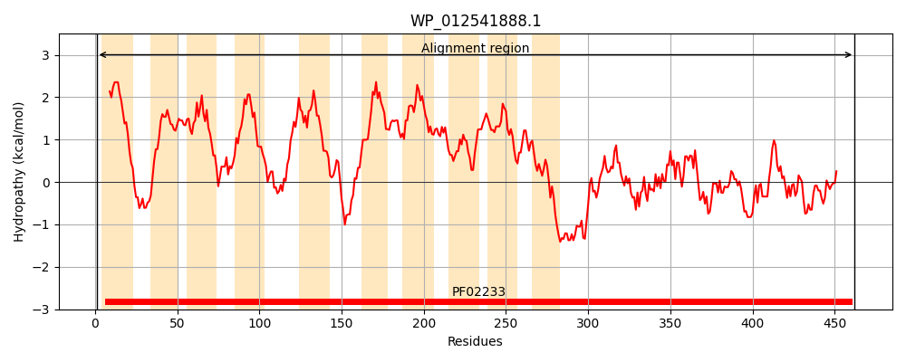
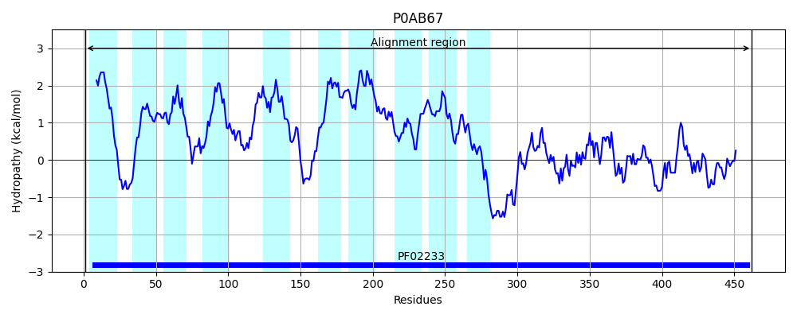
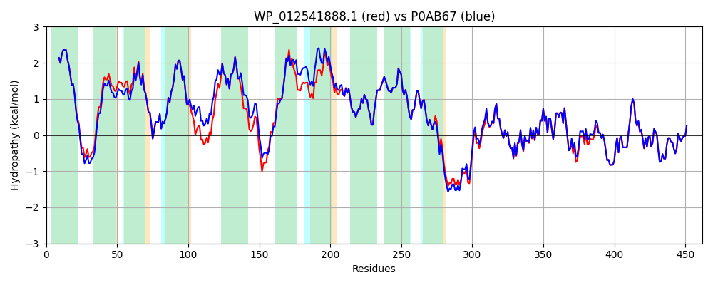

Hit Accession: P0AB67
Hit TCID: 3.D.2.1.1
Hit Description: gnl|BL_ORD_ID|8692 gnl|TC-DB|P0AB67|3.D.2.1.1 NAD(P) transhydrogenase subunit beta - Escherichia coli.
Mach Len: 462
e:0.000000
Query TMS Count : 10
Hit TMS Count: 10
TMS-Overlap Score: 8.900000
Predicted Substrates:CHEBI:5584;hydron
BLAST Alignment:
Score: 2179 , Bit scores: 843 bits, E-value: 0.0e+00, Alignment length: 462, Percentage identity: 93
Query: 1 MSGGLVTAAYIVAAILFIFSLAGLSKHETSQQGNYFGIAGMAIALIATILGPDAGNVGWIILAMVIGGAIGIRLAKKVEMTEMPELVAILHSFVGLAAVLVGFNSYLQHETGMEQILVNIHLTEVFLGIFIGAVTFTGSVVAFGKLRGKISSKPLMLPNRHKLNLAALVVSFVLMVIFVRADSTGTQVLCLLVMTAIALAFGWHLVASIGGADMPVVVSMLNSYSGWAAAAAGFMLSNDLLIVTGALVGSSGAILSYIMCKAMNRSFISVIAGGFGTDGSSSGGDEEVGEHREISAEETAEMLKNSQSVIITPGYGMAVAQAQYPVAEITEKLRARGIKVRFGIHPVAGRLPGHMNVLLAEAKVPYDIVLEMDEINDDFSDTDTVLVIGANDTVNPAAQDDPKSPIAGMPVLEVWKAQNVVVFKRSMNTGYAGVQNPLFFKENTHMLFGDAKASVDAILKAL 462
MSGGLVTAAYIVAAILFIFSLAGLSKHETS+QGN FGIAGMAIALIATI GPD GNVGWI+LAMVIGGAIGIRLAKKVEMTEMPELVAILHSFVGLAAVLVGFNSYL H+ GM ILVNIHLTEVFLGIFIGAVTFTGSVVAFGKL GKISSKPLMLPNRHK+NLAALVVSF+L+++FVR DS G QVL LL+MTAIAL FGWHLVASIGGADMPVVVSMLNSYSGWAAAAAGFMLSNDLLIVTGALVGSSGAILSYIMCKAMNRSFISVIAGGFGTDGSS+G D+EVGEHREI+AEETAE+LKNS SVIITPGYGMAVAQAQYPVAEITEKLRARGI VRFGIHPVAGRLPGHMNVLLAEAKVPYDIVLEMDEINDDF+DTDTVLVIGANDTVNPAAQDDPKSPIAGMPVLEVWKAQNV+VFKRSMNTGYAGVQNPLFFKENTHMLFGDAKASVDAILKAL
Sbjct: 1 MSGGLVTAAYIVAAILFIFSLAGLSKHETSRQGNNFGIAGMAIALIATIFGPDTGNVGWILLAMVIGGAIGIRLAKKVEMTEMPELVAILHSFVGLAAVLVGFNSYLHHDAGMAPILVNIHLTEVFLGIFIGAVTFTGSVVAFGKLCGKISSKPLMLPNRHKMNLAALVVSFLLLIVFVRTDSVGLQVLALLIMTAIALVFGWHLVASIGGADMPVVVSMLNSYSGWAAAAAGFMLSNDLLIVTGALVGSSGAILSYIMCKAMNRSFISVIAGGFGTDGSSTGDDQEVGEHREITAEETAELLKNSHSVIITPGYGMAVAQAQYPVAEITEKLRARGINVRFGIHPVAGRLPGHMNVLLAEAKVPYDIVLEMDEINDDFADTDTVLVIGANDTVNPAAQDDPKSPIAGMPVLEVWKAQNVIVFKRSMNTGYAGVQNPLFFKENTHMLFGDAKASVDAILKAL 462 | Protein Hydropathy Plots: |
|---|
|  |  |
Pairwise Alignment-Hydropathy Plot:
|
|---|
|  |